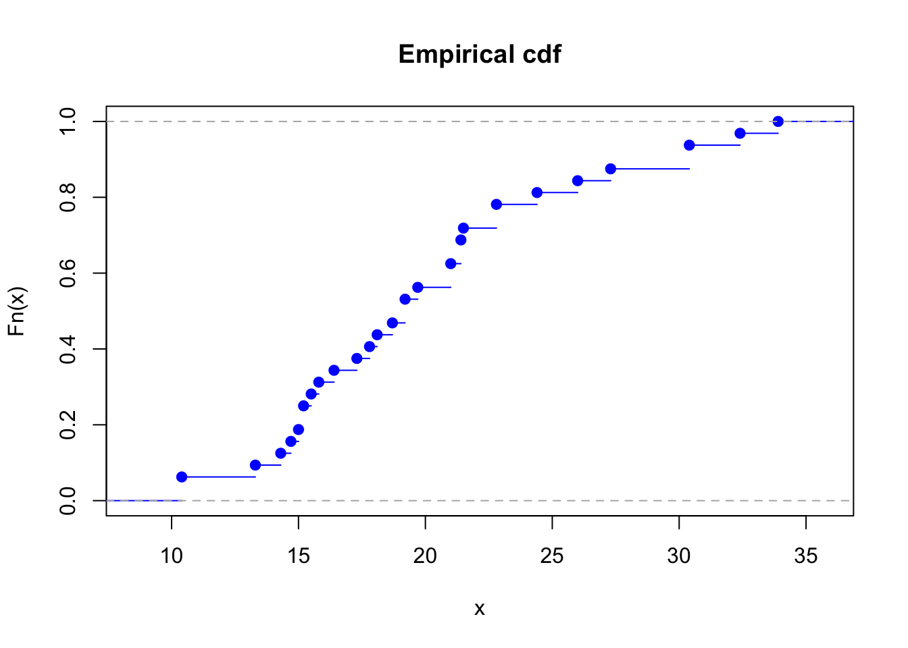

About
This page is to provide a gentle introduction of Bootstrapping and its application in R and Python. I make my own summary of the materials related to the topic and the reference is provided in the end. Hope you enjoy and find it helpful to solidate your understanding. If you find error or have something you want to add more, feel free to email me (metrics@kakao.com).
Empirical Bootstrap (a.k.a Nonparametric Bootstrap)
We observe an \(iid\) sample of size \(n\), \({[X_i]}_{i=1}^{n}\stackrel{iid}{\sim}F\). Each observation is real-values. We wish to estimate some parameter of the distribution \(F\) that can be written as a functional of \(F, T(F)\). Examples of \(T(F)\) are the following.
- \(\mu = \int{xdF(x)}\)
- \(median = \inf \{x:F(x)\ge0.5\}\)
- \(Var=\int{\left(x-\mu\right)^2dF}\)
What is bootstrapping sample and how to generate it?
Assume that we are given the data points \(X_1, \cdots, X_n\). Let’s take mtcars data set as an example.
We sample with replacement from these \(n\) points, leading to a set of new observations denoted as \[B_1 = X_{1}^{*(1)}, \cdots, X_{n}^{*(1)}\] Let’s set this as \(B_1\) which refers to the first set of bootstrapping.
Again, we repeat the sample procedure again, generating a new sample from the original data set \(X_1, \cdots, X_n\) by sampling with replacement, leading to another new set of observations denoted as \[B_2 = X_{1}^{*(2)}, \cdots, X_{n}^{*(2)}\]
Now we keep repeating the same process of generating new sets of observations, after \(B\) rounds, we have m number of sets of data points. The last B’th set of data points are \[B_m = X_{1}^{*(m)}, \cdots, X_{n}^{*(m)}\]
Each set of data points is called a bootstrap sample** This sampling approach - sample with replacement from the original dataset - is called Empirical bootstrap, invented by Bradley Efron (sometimes this approach is also called Efron’s bootstrap or Nonparametric bootstrap). These are samples with replacement because that is what IID requires.
R example making a bootstrap sample for m rounds
mpg = mtcars$mpg # miles per gallon data
n = length(mpg)
print(n)
## [1] 32
num_bs = 100 # number of bootstrap rounds (= m)
bs_sample_mat = matrix(NA, nrow=num_bs, ncol=n)
for (i in 1:num_bs){
bs_sample_mat[i,] = mpg[sample(n,n,replace = TRUE)]
}
dim(bs_sample_mat)
## [1] 100 32Let’s take median as a parameter of distribution of our interest
Using these m sets of bootstrap sample, we can generate the m number of parameter (e.g., mean and median) of the distribution as follows:
\[M_{n}^{*(1)} = median\{X_{1}^{*(1)}, \cdots, X_{n}^{*(1)}\}\] \[M_{n}^{*(2)} = median\{X_{1}^{*(2)}, \cdots, X_{n}^{*(2)}\}\] \[\vdots\] \[M_{n}^{*(m)} = median\{X_{1}^{*(m)}, \cdots, X_{n}^{*(m)}\}\]
printf = function(...) cat(sprintf(...))
bs_sample_median_vec = apply(bs_sample_mat, 2, median)
printf("Median vector of Bootstrap sample: \n")## Median vector of Bootstrap sample:print(bs_sample_median_vec)## [1] 18.70 20.35 19.20 19.20 19.70 17.80 18.70 21.00 18.70 19.20 19.70 19.70
## [13] 19.70 17.95 19.20 19.70 19.20 19.20 19.20 20.10 18.70 19.20 18.10 19.20
## [25] 18.10 19.20 19.20 21.00 19.20 19.70 18.10 19.70sample_median_vec = median(mpg)
printf("Sample median of orignal data: \n")## Sample median of orignal data:print(sample_median_vec)## [1] 19.2What is it for?
We use it to answer the following questions:
- Estimating a sample median: how certain are we?
- Error of Sample Median?
- Confidence interval of sample median?
We would like to answer what is the error of sample median? Like sample mean is an estimate of the mean of population, the sample median is an estimated of the median of population. We use bootrap sample and the series of median calculated from those set of observations. How about confidence interval? is it same for the confidence interval of population mean at \(\alpha\) confidence level that is \[\bar{X}_n \pm z_{1-\alpha/2}\cdot\frac{\hat{\sigma}_n}{\sqrt{n}}\]
- Bootstrap estimate of the variance We use the sample variance of \(M_{n}^{*(1)},M_{n}^{*(2)},\cdots,M_{n}^{*(m)}\) as an estimate of the variance of sample median \(M_n\). Namely, we will use \[\widehat{Var}_m(M_n)=\frac{1}{m-1}\sum_{l}\left(M_{n}^{*(l)}-\bar{M}_{m}^{*}\right)^2\] as an estimate of \(Var(M_n)\) where \(\bar{M}_{m}^{*}\) is a mean of the series of median from the bootstrap sample.
sample_variance = function(x){(1/(length(x)-1))*sum((x-mean(x))^2)}
bs_est_var = sample_variance(bs_sample_median_vec)
printf("Bootstrap estimate of the variance is: %.2f", bs_est_var)## Bootstrap estimate of the variance is: 0.60- Bootstrap estimate of the MSE Moreover, we can estimate the MSE by \[\frac{1}{m}\sum\left(M_{n}^{*(l)}-M_{n}\right)^2\]
bs_MSE = (1/length(bs_sample_median_vec))*sum((bs_sample_median_vec - median(mpg))^2)
printf("Bootstrap estimate of MSE is: %.2f", bs_MSE)## Bootstrap estimate of MSE is: 0.58- Bootstrap confidence interval We can construct a \(1-\alpha\) condifence interval of the population median via \[M_n \pm z_{1-\alpha/2}\cdot \sqrt{\widehat{Var}_m\left(M_n\right)}\]
alpha = 0.05
left = median(mpg) - qnorm(1-alpha/2)*sqrt(bs_est_var)
right = median(mpg) + qnorm(1-alpha/2)*sqrt(bs_est_var)
printf("CI Interval: [%.3f, %.3f]", left, right)## CI Interval: [17.687, 20.713]Difference between real world and bootstrap world
Note: We generate new data points by smapling from the existing data points. In the real world, the story starts by assuming that there is a true unknown population distribution with CDF \(F\). However, in the world of bootstrapping, we have the “true” pretend unknonw distribution with CDF \(\widehat{F}\). Actually the CDF \(\widehat{F}\) is known, and that is a good thing, because it allows us to simulate from it. But we pretend it is unknown when we are reasoning in the bootstrap world. It is the analog in the bootstrap world of the true unknown distribution with CDF F in the real world.
The bootstrap makes an analogy between the real world and a mythical bootstrap world. The below table is taken from the lecture notes.
| real world | bootstrap world | |
|---|---|---|
| true unknown CDF | \(F\) | \(\widehat{F}\) |
| true unknown parameter | \(\theta = T(F)\) | \(\hat{\theta}_n = T(\widehat{F}_n)\) |
| data | \(X_1,\ldots,X_n\stackrel{iid}{\sim} F\) | \(X_1^*,\ldots,X_n^*\stackrel{iid}{\sim}\widehat{F}\) |
| estimator | \(\hat{\theta}_n = T(x_1, \ldots, x_n)\) | \(\theta^*_n = T(x_1^*, \ldots, x_n^*)\) |
| estimated standard error | \(\hat{s}_n = S(x_1, \ldots, x_n)\) | \(s^*_n = S(x_1^*, \ldots, x_n^*)\) |
| approximate pivotal quantity | \((\hat{\theta}_n - \theta) / \hat{s}_n\) | \((\theta^*_n - \hat{\theta}_n) / s^*_n\) |
For detailed explanation, click the original lecture note
Empirical CDF
Let \(X_1,\cdots,X_n\) be independent and identically distributed from \(F\). the empirical cdf is defined as \[\widehat{F}(x)=\frac{1}{n}\sum_i I(X_i\le x)\] where \(I\) is an indicator function. \(\widehat{F}\) is a natural estimator for the cdf \(F\). Accordingly, the natural estimate of \(\theta\) is \(\hat{\theta}=\psi(\widehat{F})\), the same functional of the empirical cdf.
ecdf_mpg = ecdf(mpg)
plot(ecdf_mpg, xlab = 'x', ylab = 'Fn(x)', main = 'Empirical cdf', col='blue') ** Proposition of the Empirical CDF Estimator **
- Unbiased \[E\left[\widehat{F}(x)\right]=F(x)\]
- Consistent \[\widehat{F} \longrightarrow F(x)\] This is from the Glivenko–Cantelli theorem.
- Asymptotically normal \[ \sqrt{n}\left(\widehat{F}-F(x)\right) \stackrel{d}{\longrightarrow} \mathcal{N} \left(0, F(x)(1-F(x))\right)\]
Why does it work?
We can write the distribution of median \(M_n\) as \(F_{M_n}\) and we know that this is determined by the CDF \(F\) and sample size \(n\). Namely, we may write the CDF of median as \[F_{M_n} = \Psi(x;F,n)\] where \(\Psi\) is some complicated function that depends on CDF of each observation \(F\) and the sample size \(n\).
** Empirical D
It works because we know that \(\widehat{F}_n\) is very similar to \(F\) when the sample size is large. Thus, as long as